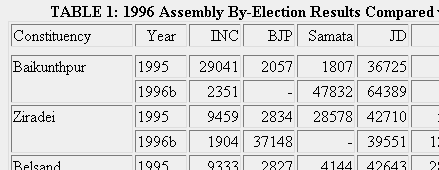

|
Economic and Political Weekly, v.32:no.41, 11 October 1997, p. 2599-2607.
Politics, Administrative Atrophy and Anarchy Walter Hauser The trends in the October 1996 by-elections in Bihar appear to confirm the results of the Lok Sabha election of April and May 1996 in the state. The Janata Dal (JD) is under political and electoral stress while the BJP and the Samata Party alliance is emerging as the, largest beneficiary. The JD in Bihar is a victim of organisational weakness as a party and its near-total reliance on the person and career of Laloo Prasad Yadav. THE year since the parliamentary elections of April and May 1996 has by any definition been one of the more remarkable times in history of the Indian polity. One must go back to late May 1964 and the death of Jawaharlal Nehru, or to the ominous days of June 1975 and the emergency of Indira Gandhi to identify points in the 50 years of India's freedom so potentially compelling in their political import as the events of the year past. Few will perhaps recall the anxieties widely felt but seldom expressed about the nation's future in the absence of its first prime minister and one of the brightest luminaries of the generation of founders. And in 1997, even June 1975 is little more than a remote memory in the lives of vast numbers of Indians. It is perhaps useful therefore to recall that as significant as these earlier transitions were in the potential directions and perceived dangers they posed to the body politic, the nation not only met them with a firm resolve but in the process affirmed the democratic idea as the guiding principle by which "Bharat" that is India would govern itself in representing the common weal of its citizens. It was precisely the institutional structures of government the people gave themselves in the Constitution of 1950 which resolved the perceived crisis of succession in 1964. And it was the mechanism of electoral politics enshrined in that same Constitution which resolved, in the massive vote of 1977, that India would govern itself from that time "forward by the democratic will of the people. I recite this history as a reminder to those .of us, who, whether academic observers or citizen participants in the life of the nation, that whereas government and party politics may be under stress in the 50th year of freedom, the constitutional instrumentalities for keeping the system on course are in place, and in some cases indeed, resilient. And none is more resilient than the electoral process itself, whatever its marginal flaws, and the free vote of the people it assures. The central argument of this brief inquiry into the 11th general election in Bihar is precisely that it is 'The People' who are the central players in the politics of democracy in the late 20th century, just as they were the central constituents in the politics of freedom in the 1920s, 1930s, and 1940s leading to their tryst and that of Jawaharlal on August 15, 1947. As everyone agrees, it is a destiny yet to be fully realised. But it is in the seeking and the achieving that a fuller measure of political, social, and economic freedom for all Indians, from all castes and classes, and beginning with the poorest of the poor in the most remote mofussil villages of the land, that those goals and that destiny will ultimately be realised. These meanings of democracy we redefined by that great American president of the common man, Abraham Lincoln as governance of, by, and for the people. That it is an ideal seldom achieved and very often at tragic cost is an idea poignantly made by Carl Sandburg in a remarkable collection of poems published in 1936 under the title The People, Yes.[1] Sixty years later I cannot resist quoting from this poetry as an introduction to these brief reflections on the 11th general election in India and more specifically in Bihar. Sandburg writes:
The people will live on. The learning and blundering people will live on. It seems fully appropriate to cite these vivid images of the American poet in remembering the 21 peasant women and children of Bathani Tola in Bhojpur district, who were murdered in cold blood on July 11, 1996, and to remember their kinsmen and fellow villagers who continue the struggle for justice and decency in the killing fields of Bihar. One might make the same appeal to memorialise the 10 landless agricultural labourers of the Musahar Tola of Habaspur village in Patna district, who were lured from their homes and celebrations on March 23, 1997, the eve of Holi, not to be fed but to be massacred; or to the eight lohars, chamars, dhobis, and kahars of Ekwari village in Bhojpur, including four women, who were raped and murdered by the Ranbir Sena with the connivance of the local police on April 10. And the list of villages and victims goes on in a continuing litany of mayhem and killing; Belaur, Khopira, Chandi, Charpokhri, Patalpura, Nonaur, Narhi, and Khanet to name but a few. And one might well add to this list the political killings of Chandrashekhar Prasad and Shyam Nandan Yadav, CPI(ML) cadres addressing a street meeting on March 31, at the JP Chowk in Siwan. This was a variation on the "normal" pattern of agrarian violence in Bihar to be sure, but a serious reflection nevertheless, in the matter of civil political discourse. The irony of the Siwan killings happening in JP Chowk, or that Shyam Nandan Yadav, one of the victims was from Ziradei, the home village of president Rajendra Prasad will also not be lost on most readers. Nor is it perhaps a coincidence that those killings were allegedly committed by the henchmen of Shahabuddin, the local JD MP, himself under a charge of murder going back to the day of the May 1996 Lok Sabha elections itself, or that Shyam Nandan Yadav had contested against Shahabuddin in both the 1990 and 1995 assembly elections. That Habaspur, Ekwari, and Siwan happened only a matter of days after Laloo Prasad Yadav's 'Maharailla' or Garib Rally on March 18, perhaps also tells us much about the nature of politics and administration in the Bihar of 1997. 'Me rally was widely hailed by the chief minister's supporters, including prime minister Deve Gowda who was in Patna for the event, as a powerful confirmation of Laloo's populist appeal among the poor and the dispossessed. The [++Page 2600] public press viewed the rally and its massive expenditure of rupees more soberly as an exercise in public and private extortion while the administrative apparatus of the state was put at the political service of Laloo Yadav. The perceptions of the poor who came or were brought to the rally, and who left without the saris or dhotis they were promised has not been widely documented but is certain to be a political issue in the weeks and months ahead. This recent history reveals that the killing fields of Bihar have over 25 years become the site of persistent warfare against the poor, the weak, and the exploited of the rural countryside.[2] This violence is not new. What is new is that in the seven years of Laloo Prasad Yadav's chief ministership as the populist champion of the poor, the problem has become endemic. In the meantime no solutions appear to be in sight as Bihar descends into a state of 'administrative atrophy' and 'anarchy' to quote recent observers.[3] The citizen victims of this crisis environment continue to be brutalised while the political leaders of the JD in Delhi and Patna concern themselves with the apparently graver issue for them of Laloo Prasad Yadav's right or suitability to continue as president of the JD in the shadow of major fodder scam charges.[4] The chief minister himself refers to those charges of the CBI, now awaiting sanction from the governor, as his "hour of crisis".[5] Whether or not the current confrontation results in a split of the JD, the fact that an issue which is plainly an internal party affair has escalated to the level of charge and counter-charge in the Delhi High Court between Laloo and his working president Sharad Yadav, gives cause for pause and deep public cynicism. And this micro-management by the courts, inevitably makes any political anxiety about judicial activism less compelling. And all the while governor A R Kidwai of Bihar takes issue with the union home minister over whether Bihar is indeed suffering from a crisis of law and order. The more serious issue in fact is whether the state is on the verge of infrastructural collapse at the most fundamental levels of administering a civil society. It is that issue which will define the political profile of the state in the weeks and months immediately ahead and it is that issue in its complex permutations which will determine the political and electoral future of the chief minister and his allies and opponents. And it is the people, the citizen voters of Bihar who will, in the final analysis, make those decisions. They are decisions obviously which will bear heavily not only on what happens in the political life of Bihar, but that of Delhi as well. And as we know well, it was in late April and May of 1996, that the voice of the people was firmly expressed in this decision-making process. It is significant to recall that they did so for the 11th time since the achievement of freedom in 1947. While some presume that the message the voters sent in 1996 was not clear, I submit that it was patently clear to those who would listen. Among other things, it was that the governments of 1996. and 1997, as all their predecessors have learned, some more pointedly than others, hold office in this democratic land by the will and at the sufferance of the people. The word that comes most quickly to mind to describe this political, historical experience is accountability. One presumes that Deve Gowda, Gujral, Kesri, and Laloo Yadav, among many others, fully understand the political implications of this fact, hence their collective and legitimate anxieties about facing the voters in a potential l2th general election before its appointed time. The result of the people's choice in 1996 is a strong move in the direction of a regionalised politics and a continuing sequence of coalition governments at the centre. The countervailing logic to this trend is that of a nationalising and centralising BJP, though that perception must immediately be qualified by the obvious fact that the BJP, barring a sea change in national voting patterns, must inevitably rely on regional party support should it aspire to power at the centre.[6] There are two other related and significant features of the Indian polity in 1997, namely, that of an activist judiciary, which is both driven by and seized With the second dominant issue, that of political corruption. There are of course legitimate anxieties about the infringement of the courts on the executive and legislative authority of government.[7] At the same time it must be said that there is a strong anti-corruption mood in the country and that the activism of the courts is in fact widely endorsed by the people. It is also widely suggested that the judiciary has in a very real sense stepped in by force of circumstances to fill the vacuum left by the other two branches, or as in the case of political corruption, caused by them. My point here is not to review the history of political scandals at the centre or in the states, and I will raise the issue for Bihar only to reinforce my point about the people's sensitivity to what are obvious issues of concern in their daily lives. One of these is obviously the fodder scam and it must be noted that the issue stands where it does in 1997 not only because of the investigations and charges of the Central Bureau of Investigation, but because of the monitoring of the case by the Patna High Court through the division bench of Justice S N Jha and Justice S K Mukhopadhyaya at the specific direction of the Supreme Court.[8] That Bihar has been defrauded of an estimated Rs 950 to 1,500 crore, the largest part of that amount in the years since 1990, a period when the chief minister also held-the finance portfolio, has implications for the fiscal and infrastructural integrity of the state that should be obvious.[9] Even the lower figure of Rs 950 crore, comes to Rs 100 for every man, woman, and child of Bihar's population, now exceeding 90 million. If the scam was news to the political elites of Delhi and Patna after it broke into public view in January 1996, it was certainly less so to the citizen voters of the state, a fact which seemed patently clear in the results of the Lok Sabha election of 1996 and the 10 assembly by-elections of October 1996. Given this evidence one then wonders why or how 1996 was so widely viewed as an election without issues. For example, the historian Rajat Kanta Ray wrote pointedly about 1996 that, "if there is an issue in the forthcoming elections, the adult population of India has not located it yet". Finding no evidence of 'market, Mandal, or mandir' in the campaign, Ray then notes the profound disillusionment of the electorate with every political party. He allows that "India's vast electorate [is] at the moment entirely without a sense of direction".[10] To be sure the electorate maybe disillusioned, but to suggest that they have no sense of direction somehow misses the point about the nature of democratic politics. Ray's assumption that only the parties and the politicians define the issues has an element of truth to be sure, but in the end it is ultimately the people who, make that determination. And for the people, central among many issues in 1996 was obviously corruption as Jayalalitha, Laloo, and Narasimha Rao, among others, might ultimately. agree. That certainly appeared to be the case in Bihar. Back to the top.
There were many rich ironies in the politic drama played out in Delhi in the days following the election of 1996 and be the ascension of Deve Gowda, none perhaps more poignant than those involving the president of the JD and the sitting chief minister of Bihar, Laloo Prasad Yadav. Barely 48 at the time, Yadav has now served as chief minister of India's second largest state longer than any of his predecessors other than Krishna Sinha, who assumed that office as early as the first Congress ministry in 1937, and remained chief minister without interruption from 1946 until his death in 1961. Laloo's seven plus years in office is accordingly an impressive record of political longevity by any standard. But the ironies of May and June 1996 have only been compounded in the, year since involving the leadership of the Congress and most especially that of Sitaram Kesri, the entire leadership of the JD and the United Front (UF), and finally and most critically [++Page 2601] of course, Laloo Prasad Yadav himself. It is his fortunes as the chief accused in the Bihar fodder scam on which not only his chief ministership rests, but the JD as government in Bihar, its integrity as a unified party in Patna and Delhi, and the UF as governing coalition at the centre. For good or ill, Laloo is effectively the central figure in Indian politics in mid-1997, though I will attempt here to confine myself to his role as the main political player and still widely popular chief minister of Bihar. Laloo Prasad Yadav was named leader of the JD legislature party following the 1990 assembly elections and became chief minister in March of that year. In the Lok Sabha elections of May and June 1991, the JD won 32 seats outright in Bihar, and with the support of its National Front - Left Front allies, the CPI with eight seats, the CPM one, the Jharkhand Mukti Morcha with six, and one independent, it controlled 48 of the 54 seats. The BJP won five seats in that election, all in Jharkhand, and the Indian National Congress, one seat, in Begusarai. This was a political dominance for the JD and its NF-LF partners almost unknown in Indian electoral history. It was a dominance confirmed in the legislative assembly elections of 1995 when Laloo's JD wave literally swept aside all opposition with a majority of 165 seats in an assembly of 324. With its CPI (26) and CPM (6) allies, the JD thus controlled 196 seats, and with 41 seats the BJP trailed far behind as the main opposition. Congress had '30, the JMM 16, other Jharkhand parties 6, the CPI (ML) 6, the recently formed Samata Party 5, independents 13, and other parties 10. On the surface this appeared to be both an enviable and an unassailable position of power, and Laloo's own image of invincibility was confirmed by his being named all-India president of the JD in January 1996. This ,followed on the resignation of S R Bommai "to dispel the cloud of suspicion against him in the Jain hawala case".[11] It was coincidentally in January 1996 that the first reports of the Bihar fodder scam began to surface into public view. Apart from the obvious ironies in this history, it was only when he was named JD president that the Delhi media an to take serious notice of Laloo Prasad Yadav and almost immediately began to see him as a potential candidate for the prime- ministership. For five years he had been widely dismissed by the urban press as a rustic buffoon, speaking not only the language but using the social idiom of the poor, yet now he was seen as a prime minister-in-waiting. Of course, both images were flawed, the first because it ignored the absolutely brilliant skills of a complex and consummate populist political campaigner and vote-getter, the second because it ignored what are widely considered to be his limits as an administrator. And his apparent failure to apprehend the very idea of systematic development and change, leave alone to engage in its implementation. In the meantime, with Laloo's new image as a major political player, prominent residents of Delhi's diplomatic enclave soon found their way to Patna to meet this political wonder of the common man, and the chief minister assured one and all that his second term would be one not only of social justice for the poor, stability and communal harmony, but economic growth and develop ment. And trips to south-east Asia and the US, and the Patna conference of NRls, who signed memoranda of understanding galore, seemed evidence enough to the Delhi press that the benighted Biharis had finally found a leader to match their rich potential. There was scarcely a weekly newsmagazine or newspaper supplement that did not carry a feature story of the redoubtable Laloo as campaigner and man of the people. 'Laloo bhaiya' was described as the raja, the messiah of the poor, the 'desh ka neta', who would carry the message of social justice, self respect, and economic redemption for the poor of Bihar, to Delhi itself. Indeed, 'Dilli chalo' became both the symbol and substance of the chief minister's campaign message in 1996. His public self-assurance carried through the final days of campaigning as did the press reports suggesting that the voters were indeed mesmerised by their 'Laloo bhaiya' and were solidly behind him, the complaints of people along the way about roads, electricity, pensions, pakka houses, and the subsidised saris and dhotis he had promised everyone below the poverty line, notwithstanding. Of course, Laloo promised everything in good time, explaining in the meantime his repeal of toddy tapping and fishing taxes, among other measures meant to benefit the poor.[12] By campaign's end Laloo was moving at a killing pace, making as many as seven or eight campaign stops a day, at one hour, and sometimes 30-minute intervals, travelling by helicopter, then finishing, as he did at Kurtha in Jehanabad constituency of central Bihar on May 2, with village stops along the way in his 'garib chetna rath'. This converted bus was used literally and figuratively as the vehicle to project the awareness and self-respect of the poor. It was a low key approach but brilliantly effective in the hands of this quintessentially populist chief minister. This was not the rath of the south Indian movie heroes turned politician, or of Lai Krishna Advani of the BJP, but an entirely unpretentious rath of the poor, the common people of rural Bihar. And when he invited them to Delhi for tea, or to vote for the sitting CPI candidate in Kurtha, "who will raise his hand on my behalf, so the poor will have a voice in Delhi", he did so with understated calculation. When you make me the prime minister, we will bring money from Delhi to help the poor of Bihar, he said. In all of this he neither appeared disingenuous, nor was he lecturing at his peasant audience of 4,000, but in effect talking with them, as if he were sitting in heir village huts, as in fact he often did. They laughed with him when he, explained that many untouchable musahars now had pakka roofs on their houses, whereas poor upper caste bhumihar brahmans did not, "but we will do that too, if you vote for the CPI/JD ticket". He was quietly but pointedly reinforcing he social justice theme of his first term, of assuring 'izzat', ie, self-respect to the socially and economically deprived of the land. Then he explained in great detail how to vote, how to mark the ballot, how to stamp it on the appropriate party symbol, how to fold it and lace it in the ballot box, as he literally dropped a sample ballot between the microphones where he was seated. It was a disarming and impressive performance, and while the voters of this constituency gave his candidate a strong winning margin, for the state as a whole, of course they did not. My sense was that the peasant voters at Kurtha were intent on listening and learning, and they were often amused by their chief minister, with whom they felt completely relaxed, but they were obviously not mesmerised, as the press almost inevitably presumed. My reading is rather that much of the press was mesmerised, as were many of Laloo's political associates and allies in Delhi and Patna. Only since his imminent charge-sheeting in late April, and early May 1997, have they begun to distance themselves from the chief minister. Based on the 1996 election results one might infer that the voters were rather more erceptive at an earlier point in time about what in fact was happening than much of the political leadership. For example, comparing the 1996 Bihar results with 1991, the JD dropped from 32 to 22 of the 54 Lok Sabha seats, the CPI from 8 to 4 seats, while the CPM lost its lone seat giving the NF-LF combine in Bihar a total of 26. In the meantime the JMM stood independently of the NF-LF in 1996 and was reduced from six seats to one in the new parliament. And finally, Pappu Yadav, the lone Samajwadi MP, while standing with the UF at the centre is, however, vigorously opposed to Laloo in Bihar itself. And given the anticipated charge-sheeting of the chief minister in the fodder scam, the entire Left, including the CPI is calling for Yadav's resignation, thereby leaving the parliamentary strength of the JD at its base figure of 22, compared to the 48 seats Laloo effectively controlled in 1991 .[13] However one juggles these numbers, [++Page 2602] defections to the Samata Party and Congress in the interim notwithstanding, the JD decline from its near-total dominance of 1991 is dramatic by any definition. The Indian National Congress which had one seat in 199 1, lost that seat but won two others, while the BJP improved sharply from 5 to 18 seats, capturing 12 of the 14 seats in tribal Jharkhand, and six seats in north and central Bihar. It is important to note that of those 18 seats, six are SC-ST seats from among the 13 reserved constituencies in Bihar, and two of these six are non-tribal seats in central Bihar previously held by the JD and the CPM, Buxar and Sasaram, respectively.[14] The BJP's anti-Laloo partner in this election, the Samata Party, which was formed in 1994 as a breakaway of the JD, won six seats, giving that combine 24 seats, effectively passing the JD in the strength of their Lok Sabha numbers. Equally important in considering these figures are the vote percentages involved. In the three assembly elections of 1985, 1990, and 1995 the' BJP generated percentages of 7.5, 11, and 12.9, respectively, while in 1996 it moved to 20.54 per cent of voter support.[15] These successes were further enhanced by the Samata Party alliance with its 14.45 per cent of the vote share, for a 1996 total of 35 per cent, thus exceeding the JD's 31.8 per cent and effectively equalling the combined 36.88 per cent when adding the CPI's 5.08 figure to the JD alliance, now however fractured. The 1996 Congress percentage was 11.26, the JMM 2.48, the CPI (ML) 1.48, Samajwadi 1.29, and CPM 0 82. What is notable here is that the BJP percentage of the vote share exceeds the percentage of upper or 'forward' castes and middle urban castes normally thought of as the sole BJP support base. As all of these figures show, the BJP has also intruded heavily into the Chhotanagpur tribal belt, where the JD and the INC are effectively non-existent and the Jharkhand parties are badly fragmented. [16] The BJP and the Samata Party, individually and jointly, were in 1996 the major anti-Laloo party formation in Bihar. As the fodder scam charge-sheeting has proceeded, a second anti-Laloo alliance including primarily the CPI (ML), CPI, CPM, and Samajwadi Party has also taken shape on the left, although it must be noted that the ML's vigorous opposition to Laloo is not a recent development. And as I have suggested earlier, the anti-Laloo pressure of the combined opposition has now been joined by dissidents from within the JD itself. The political calculus of these results is an obvious function of the splits in the backward caste, untouchable-dalit, and Muslim alliance which Laloo had crafted so brilliantly before and after the 1990 and 1991 elections. For Laloo the assumption that his populist caste rhetoric would keep him in office for 20 years-as the leader of a broad based social coalition, was marred by what one observer has rightly described as a limiting "tunnel vision" that has reduced him in mid-1997 to the status of yet another yadav leader.[17] And as the October by-elections and the current round of fractious infighting in Delhi and Patna make clear, even that position is being contested, albeit in the latter case within the framework of broader JD infighting. There are obviously many elements involved in the fragmentation of Laloo's grand alliance. I will note here only one or two of the more tangible factors in this complex mix of social, economic, and political realities on the ground. Among the most obvious is the 'yadavisation' phenomenon whereby the chief minister, openly cynical of the idea of serious administration, has nevertheless involved himself in widespread transfers and postings to the narrow interests of his caste fellows and political supporters. Anyone remotely familiar with Bihar can identify the number and proportion of police officers or other officials of what caste have ascended or descended in their postings at the whim of the chief minister. That very idea and its implementation for example, had much to do with the formation of the Samata Party in 1994 by the engineer and kurmi leader, Nitish Kumar. But as the historian Arvind Das rightly points out, the Samata Party phenomenon has much deeper social, economic, and political meaning than a simple-minded reaction to an overzealous yadav chief minister. Despite the widely-held perception of Bihar as no more than a place of mass poverty, backwardness, and violence, the state does have a history, and that means change, and it also means growth.[18] Among other groups involved in this cycle of change, the upwardly mobile kurmis have both driven and been a product of that history and the economic growth it has generated. For example, Das, who knows Bihar as well as anyone, reports that there are more professionals, especially, doctors and engineers among the kurmis than any other caste.[19] These are people not likely to be attracted by Laloo's politics of poverty, whether he claims to represent the OBCs or not. By the same token they are presumably equally concerned about a civil society of law and order where kidnapping, train robberies, and murder are far too common a feature of everyday life, no matter one's social status or professional position. And while some observers are concerned only with this crisis of "law and order", it is also true that upwardly mobile middle castes like the kurmis, koeris, and of course yadavs as well, have been active creators and beneficiaries of dramatic changes in agriculture. It is an agriculture which at 3 per cent has a growth rate as high as most in the country, despite the effective failure of any public investment in this sector.[20] This achievement, for example, is visible in the towns and fields of the Nalanda parliamentary constituency which George Fernandes, the Samata Party candidate won massively in 1996. As I moved briefly through that constituency in late April 1996, 1 was struck by a number of low key but very visible markers of prosperity. Tube wells, cold storage facilities at virtually every crossroad, and vast fields of yellow, oil bearing sunflowers; all three obviously indicating a progressive, productive agriculture, It is not a coincidence that yadavs and kurmis, each at just above 10 per cent of the population, comprise the largest demographic segment of this rural constituency. It is also not a coincidence that the Samata Party candidate won this seat in 1996 by a margin of 1,67,864 seats or 55.1 per cent out of 8,83,016 votes cast. Even more notable is the fact that the incumbent and losing candidate was V K Yadav, of the CPI and hence supported in this election by Laloo Prasad Yadav. Third position went to the CPI (ML) candidate with 33,184 votes or 3.7 per cent, and fourth position, notably to the INC with 25,772 votes or 2.9 per cent. Most important in assessing these figures is the 10 per cent drop in votes garnered by the JD-supported CPI candidate from 46.54 per cent in 1991 to 36 per cent in 1996, and the effective collapse of the Congress between those two elections. The INC candidate in 1991 attracted 2,73,695 votes or 34.84 per cent, which means a Congress drop off of more than 90 per cent between 1991 and 1996. The Samata Party was clearly the beneficiary of these INC and CPI (and hence JD) losses. The other reality of post-Laloo dominance in Bihar politics is the softening of. the scheduled caste-dalit support base which Laloo has done so much to cultivate. His subsidised or free dhoti-sari scheme is directed specifically at this constituency, but the very self-respect logic which Laloo has done so much to generate, has inevitably served to raise expectations, especially to the absence of promises fulfilled. Among the four dissident ministers recently sacked by the chief minister are both yadav and scheduled caste leaders, and the subsequent resignation of Pashupati Kumar Paras, the brother of Ram Vilas Paswan, the railway minister at the centre, has brought this new power node to more open public notice. The formation of an all-dalit morcha early in 1997, including MLAs from the BJP well as the ruling JD with a pointed concern over the fundamental issue of atrocities [++Page 2603] against scheduled caste citizens, was an earlier element in the growing political presence of former untouchables on their own terms. That other left parties, especially the CPI (ML),had been making a political issue over these sena killings for years, does not make this more recent development any less compelling or politically significant. From the perspective of the chief minister, the most serious public demonstration of scheduled caste opposition came from the Dalit Chhatra Morcha at an Ambedkar Mela on the Gandhi Maidan in late April 1997. With the students shouting "Go back Laloo, killer of dalits", the chief minister, on the advice of his advance party, chose not to make an appearance.[21] These various combinations and recombinations of caste, class and creed are obviously relevant in understanding the, results of this or any other election. But it is what the sociologist Dipankar Gupta refers to as specific secular and political interests, and to which I would add economic interests and personality interactions, which are increasingly decisive in determining how people vote.[22] As is true for any social or religious segment of society, whether Muslim, yadav, dalit, kurmi, rajput, or whatever, these are never unitary solidarities in any political sense. And the fragmenting of the M-Y factor,[23] the Muslim and yadav support base of the JD, for example, in the 1996 election in Bihar is a good case in point, as is the upper-backward caste alliance of the BJP Samata Party as an anti-Laloo formation.[24] The more recent lift opposition alliance, effectively led by the CPI (ML), makes the same point. The expectation is that it is these parties which will be the beneficiaries of this opposition in any forthcoming election in Bihar, whether for the Lok Sabha or the legislative assembly. What seems clear in the present climate is that Congress and the JMM, already fractured and suffering, and the JD, will be the losers. However, my explanatory argument goes beyond this standard social and political calculus to suggest that issues of political freedom as well as economic and social freedom and the allied issues of social justice and self-respect have a long history in Bihar. These are fundamental human rights' in this society as in any other, and Laloo Prasad Yadav, coming as he did out of the student movement of the early and middle 1970s, has certainly brought the issue and the idea to a new level of awareness in Bihar. But to repeat, the concept is not new in Bihar or elsewhere in the country for that matter. I think here of the contributions of Swami Sahajanand, Panchanan Sharma, Jadunandan Sharma, Karyanand Sharma, Kishori Prasanna Singh, Ramnandan Mishra, Dhanraj Sharma, Ganga Sharan Sinha, and Jayaprakash Narayan, and more recently Karpoori Thakur, among many, many others active in the public life of Bihar in this century. And of movements like the Kisan Sabha, the Triveni Sangh, the Bihar Socialist Party, and the CPI, mostly under the umbrella of the Congress, whose activisms and objectives were in a very fundamental sense of, by and for the people. Few will know that it was yadav peasants who, in 1927 pleaded with Sahajanand to aid them in their struggles against the bhumihar brahman zamindars of Masaurhi, and that it was from that beginning that the most powerful peasant movement in India, the Bihar Provincial Kisan Sabha emerged. And among the many beneficiaries of that movement were precisely those productive and upwardly mobile middle agricultural caste groups now courted so assiduously by all political parties in Bihar, whether left, centre, or right. It is also revealing to note that Sahajanand and the Kisan Sabha were equally seized with the issue of equity, justice, and izzat for the poorest of the poor, issues to which all parties lay claim in 1997, including here especially the CPI (ML), which is active in many parts of the state but primarily in those areas where the Kisan Sabha itself was most active in the 1930s.[25] The near-equal division of the vote in the Arrah constituency in 1996 between the JD, the Samata Party, the CPI (ML), and the Indian National Congress, in that order, makes these points nicely, It is this history and its memory in 1996 which provided the citizen voters of Bihar, across the political and social spectrum, a strong sense of their place and their rights in this society. And it reinforces the high expectations of performance they demand from the political leaders they elect. I recall the response of Karpoori Thakur during the emergency of Indira Gandhi when she rationalised that Westminster democracy was not meant for countries like India. What Indians wanted and needed was bread. Karpoori, who was underground at the time explained pointedly, 'Hamko azadi aur roti chahiye', that is, we want freedom and bread, a memorable observation I take to be deeply etched in the"collective mind of the citizen voters of India and Bihar, Putting that logic in the context of 1996, one might say that the voters of Bihar gave a similar message, to wit, 'Hamko izzat, roti, dhoti, aur pakka makan chahiye', namely, we want self-respect yes, but we also want bread, dhotis, and pakka houses. In other words, the voters of Bihar have supported massively the idea of social justice and self-respect, and perhaps now they are reminding the political establishment that they want performance and an improvement in the quality of life, symbolised in the broadest sense in the roti, dhoti, pakka makan metaphor. Back to the top.
The most recent evidence we have of voter sentiment in Bihar, and based on a wide, though random, geographical distribution in the state, are the October 1996 by-elections. I will conclude this reflection with a brief review of these 10 assembly constituencies, all of which were won by JD candidates in the sweep of 1995, and all of whose sitting MLAs were elected as JD members of the Lok Sabha in the general elections of 1996. The point here obviously is that these were strong JD constituencies, and the results of the by-election, so soon after the parliamentary election of April and May 1996, and barely 18 months after the 1995 assembly elections, may certainly be taken as a preliminary indicator of voter sentiment, following on the argument in the pages preceding, but well before the full import of the fodder scam became public currency.  I will proceed with a table [Click here to see Table] comparison between the 1995 assembly results and the October 1996 assembly by-election results for these 10 constituencies. From that point I will comment briefly about relevant circumstances bearing on each constituency, then conclude with inferences that might be drawn from these constituencies taken as a random sample. It should be noted at the outset as already indicated, that the JD won all ten constituencies in 1995, and retained six in the by-elections. Of the four lost by the JD, three went to the Samara Party and one to the BJP. It is also relevant to note that five of the constituencies are in north Bihar, and five in Gangetic Bihar south of the Ganga. Baikunthpur: In the home district of the chief minister and in the Gopalganj Lok Sabha constituency, Baikunthpur was among the safest of JD assembly constituencies. It was also a prestige constituency for Laloo inasmuch as the 1991 JD MP and former Congress chief minister, Abdul Ghafoor had gone over to the Samata Party and was a third place finisher in the 1996 Lok Sabha poll. The Samata Party candidate in the October 1996 by-elections was Brijkishore Narain Singh, a second place finisher in the 1995 assembly election on the Congress ticket, a four time MLA and former minister of the state government. The JD ran up its highest vote tally here of any of the 10 seats being contested. It should also be noted that the Samata Party-BJP alliance was at work in these by-elections as indicated in the accompanying table, and to their obvious advantage, Ziradei: This is the home constituency of S M Shahabuddin, now in jail on a murder charge stemming from the killing of CPI (ML) cadres on the day of the 1996 Lok Sabha election, which he won. In 1990 [++Page 2604] Shahabuddin narrowly won this assembly seat over the Congress candidate while running as an independent. He then won the seat on the JD ticket in 1995, but with a substantial Samata, Party showing. That Samata Party vote went to the BJP in the 1996 by-election, which lost to the JD candidate but by a margin of only 2,403 votes. This narrow margin suggests that the voters may be less dominated by the whim of the local power broker, Shahabuddin, now in jail, than once presumed. The emergence of the CPI (ML) in this north Bihar constituency, however minimal, is a development to be noted, especially given the murderous opposition of Shahabuddin to their efforts. Finally, the continuing decline of the Congress, in the home place of India's first president, Rajendra Prasad, is a visible phenomenon here as elsewhere in the state. Belsand: In the Sheohar parliamentary constituency in the north-west quadrant of north Bihar, this was by any definition a prestige seat for the JD and the chief minister. The 1995 incumbent was Raghubansh Prasad Singh, won the Vaishali seat in the 1996 Lok Sabha election, and is one of the three JD MPs from among the 10 seats considered in this by-election analysis to be named to the Deve Gowda ministry at the centre. That the seat was won by Brishen Patel, formerly a JD MP now running as a Samata Party candidate, made the confrontation with the chief minister that much more compelling. Notable here is the swing both to the winning Samata Party from its 1995 showing and the dramatic influence of the Samajwadi Party, though not a significant force in Bihar politics overall, in determining the outcome of this election. The Samata Party vote was obviously also influenced by the fact that another of north Bihar's power brokers, Anand Mohan, won the Sheohar seat in the Lok Sabha election on the Samata Party ticket. It was presumably the very high stakes involved of so many major players which accounted for the dramatic increase in voter participation in this election, although short of closer inquiry, this logic can be no more than an. estimate of what in fact happened. Warisnagar (SC): That the JD won in this reserved assembly segment of the reserved Rosera parliamentary constituency situated in central north Bihar, is less significant than that its margin was well below 2,000 over the second place BJP candidate. And this in a Lok Sabha constituency where Ram Vilas Paswan, currently railway minister at the centre had won massively in the 1991 parliamentary election. In 1996 be stood from Hajipur, and the Rosera seat was won by Pitarribar Paswan, the incumbent in the Warisnagar assembly seat. This was essentially a straight contest between the BJP and the JD with the other three contesting parties playing impsortant if marginal roles in determining the outcome, though the Samajwadi and ML votes were more than sufficient to prevent a BJP win. Jokhihat: This seat in the Kishenganj Lok Sabha constituency of far northeast north Bihar was won by M Sarfaraz Alam, the son of Taslimuddin who had held the seat on five previous occasions, most recently in 1995 as the Samajwadi Party candidate. Taslimuddin won the Kishenganj Lok Sabha seat on the JD ticket in 1996 and was promptly named minister of state for home at the centre, but then forced to resign under a cloud of alleged criminal involvement, to the considerable embarrassment of Deve Gowda, and Laloo Prasad Yadav. Katoria: This assembly segment of the Banka Lok Sabha constituency is situated on the eastern edge of south central Bihar and is one of the safest JD assembly seats. Katoria .and Baikunthpur are the only two seats of the 10 contested in October 1996 where the JD made gains in its winning margin from 1995. The incumbent, Girdhari Yadav won the Banka Lok Sabha, seat, and was replaced in, the Katoria seat by Bhola Yadav. Paliganj: This and the Piro constituency are two of the more complex in the political history of the state in recent years, and involving some of its major players. The Paliganj assembly segment is situated in the Patna district but in the Arrah Lok Sabha constituency. The seat was won in 1990 by Ram Lakhan Singh Yadav as a Congress candidate, with the CPI(ML) candidate in second position and Chandra Dev Prasad Verma of the JD a distant third. In 1991 Ram Lakhan won the Arrah Lok Sabha seat as a JD candidate and ally of Laloo, then in the interim reverting to the Congress and accepting appointment in the Narasimha Rao ministry at the centre. And in the process, of course, severely alienating Laloo Prasad Yadav. In 1995, Chandra Dev Prasad Verma, with massive support from Laloo won Paliganj on the JD ticket, the position from which he contested and won the Arrah Lok Sabha seat in 1996 to be named a minister in the cabinet of Deve Gowda. He retains that position though currently under a charge- sheeting cloud in the multi-crore fodder scam. He has not been asked to resign by prime minister Gujral, presumably anticipating sanctions by governor Kidwai. As the table shows, all parties were critical players in the by-election, but it was the bhumihar Janardan Sharma of the BJP who won in this backward and scheduled caste dominated constituency. The spoiler role of the Samajwadi Party of Pappu Yadav is again obvious in this dramatic turnaround and says much about the alienation among yadav voters in this constituency from their chief minister, and reinforces the argument that caste is only one among many variables in this political environment. The Congress decline in the absence of Ram Lakhan was precipitous, following on his fourth place finish in the 1996 Arrah Lok Sabha race, trailing the JD, Samata Party, and CPI(ML),' in that order. Piro: The 1995 incumbent in the Piro segment of the Bikramganj Lok Sabha constituency on the west side of the river Sone, was Kanti Singh. With undivided support from Laloo Prasad Yadav, she won the Bikramganj Lok Sabha seat in 1996 and was promptly elevated to the position of [++Page 2605] minister of Staten the cabinet of Deve Gowda, a position she retains under Gujral. That her Piro constituents heckled her hand-picked successor candidate in the by-election campaign, says much about the decline of JD fortunes in this backward and scheduled caste agricultural constituency.[26] The JD candidate was a third place finisher after the Samata Party winner and the second place CPI (ML) candidate. The Samata Party winner was Shivanand Tiwari. Nabinagar: This constituency in a segment of the Aurangabad Lok Sabha constituency, in the south-west comer of the old Gaya district and in the heartland of Congress dominance. As recently as the 1996 parliamentary election, Satyendra Narain Singh, the Congress chief minister of Bihar in 1989, and the son of Anugrah Babu, a major political player of the 1930s, was a second place finisher in this Lok Sabha contest, and in fact won the Nabinagar segment with well over 33,000 votes. The Lok Sabha seat was won by the JD candidate and Nabinagar incumbent, Virendra Kumar Singh, and it was that seat which was being filled in this by-election. The massive vote for the Samata Party candidate, Lovely Anand, suggests the party's skills at mobilising votes, in this case significantly of its rajput supporters, but certainly not exclusively so. The party exhibited those same skills at Belsand where it convinced rajput voters to support its kurmi candidate, and at Piro where its candidate was a brahmin. In the end political tactics and skill in executing them do count, whatever the social demography involved. Barachatti (SC): Barachatti is an assembly segment in the Chatra Lok Sabha constituency directly south of Gaya. The 1995 incumbent JD candidate, Bhagwati Devi, won the Gaya (SC) seat in the 1996 parliamentary election and was succeeded in Barachatti by Jitan Rain Manjhi of the JD, a former minister of the Bihar government. This was essentially a straight contest between the JD and the 13JP with the latter doubling its vote total from 1995, and the JD marginally up in its vote count. In absolute terms, it was the Samata Party which was the most successful in this round of by-elections, winning three of the four seats it contested, namely, Belsand, Piro, and Nabinagar. But even in Baikunthpur, a safe JD seat, the Samata Party managed an impressive 47,832 votes. On the other hand, while the Samata Party's ally, BJP won only one of the six seats it contested, the difficult Paliganj seat, it was a very close second in Ziradei and Warisnagar and tallied in excess of 27,000 votes in the two SC reserved constituencies of Warisnagar and Barachatti. Only in Jokhihat and Katoria which were certain JD wins, was the BJP showing marginal. The Samajwadi Party in all likelihood cost the JD two seats, possibly three, just as it may have cost the CPI (ML) the Pali seat. The CPI(ML) in the meantime built on its strength and was a factor in both Pali and Piro, and exhibited a modest but new presence in Ziradei and Warisnagar in north Bihar, a fact which was potentially offset by its weaker showing in Nabinagar and Barachatti. The biggest loser of course was the Congress which suffered disastrous declines in all constituencies except Jokhihat where it held its own, but still achieved only a third place finish in a constituency apparently owned by Taslimuddin. The results for the JD and for Laloo Prasad Yadav are rather more complex. Most damaging certainly for the chief minister were the stinging defeats in Bel sand, Paliganj, and Piro where not only his reputation was on the line, but that of the three ministers he hand-picked for places in the central cabinet. And the Nabinagar loss cannot have been a happy one, given the margin of the Samata Party win. Of the six seats won by the JD, three were essentially safe seats, Baikunthpur, Katoria, and Barachatti for which the JD and Laloo must be given full political credit. Of the remaining three, Ziradei and Jokhihat are constituencies in which Laloo was scarcely a factor, and in Warisnagar (SC), the fact that the JD bested the BJP by a mere 1,753 votes can give the chief minister little comfort. In the end, the trends in the October by-election appear to confirm the results of the Lok Sabha election of April and May 1996. This is clearly a pattern of a JD under political and electoral stress in which the BJP and the Samata Party are the strongest beneficiaries given their role as the largest opposition alliance in the state. The JD in this case is also victim to its organisational weakness as a party and its near-total reliance on the person and career of Laloo Prasad Yadav both as chief minister and as president of the JD. To repeat what seems obvious, the fortunes of the party are clearly tied to Laloo. Back to the top.
As I have suggested, it was widely believed that 1996 was an election without issues. But I suspect what is being said is that it was an election without catchy slogans. What in the US are referred to as bread and butter issues, or gut issues, are equally important in India. To push the point further, for example, if teachers and non-gazetted employees, and others are not paid their salaries for months, indeed years on end, that is clearly an issue which will agitate the electorate. And the recent history of kidnappings, train robberies, and what are casually referred to as atrocities, are equally meaningful issues for the citizen voters. To be told by the press and the establishment ,that there is a law and order problem, and in the process condemning randomly described "naxalites," and landlord senas as equal partners in these killings, is only a small step from blaming the poor for being poor. As most people will understand, these are systemic problems and they have causes, and stigmatising the poor and portraying Bihar as a mindless caricature of the human experience of a large part of India, is unfortunately no solution. For seven years Laloo Prasad Yadav presented himself as the solution, but that too now seems sadly unlikely, an opportunity missed by someone who had a massive mandate. But that mandate and the promises he made were also issues and indeed made of him an issue, as he certainly seemed to imply by his rhetoric and actions, as he still does. Yet some observers in Delhi and Patna went so far as to suggest that the rural voters of Bihar were oblivious of, or unconcerned with the multi-crore animal husbandry scam, thinking that inasmuch as everyone did it, why hold the current incumbents liable? By this logic it is only the urban middle classes who are concerned about corruption. But I am persuaded that in 1996 this was a bad misreading of the sensibilities of the citizen voters of Bihar. They were not only aware of what was happening but deeply pained and offended that their 'Laloo bhaiya' might have betrayed them. His opposition to a CBI investigation, since enforced by the Patna High Court and sustained by the Supreme Court, did little to allay their anxieties. What the arrest of Shyam Bihari Sinha and others directly implicated in the scam, and the subsequent charge-sheeting of 56 politicians and administrators, including the chief minister may mean for Laloo and for the state, only time will tell. However, we can say that CBI reports and charges by the office of the comptroller and accountant general appear far more serious than anyone had earlier thought likely or possible. The attempted suicide of the animal husbandry minister when he lost in the Bagaha constituency, suggests that he too thought that the fodder scam, extending over a period of 15 years, was a potent issue. As does the recent spate of killings and/or suicides of others charged or involved. And the assumption, at least my assumption, is that the voters also know about the bitumen scam, the Ranchi land scam, the drugs scam, the police uniform scam, etc. After all, they live in Bihar. My conclusion obviously is that Indian voters know far more about their social, economic, and political interests than some cynical urban observers give them credit for. The World Bank definitions of literacy and illiteracy are not terms in my explanatory lexicon of life in rural India. Peasants do not [++Page 2606] need to read an English language newspaper to cast an informed and intelligent ballot. They produced the food and provided the political constituency which achieved freedom in 1947, and I am persuaded that they play an equally critical role in the political process in 1996 and 1997. They are the backbone of the dynamic democratic polity that is India in the late 20th century. In the circumstances, whatever happens in the election of the JD president, or in the governor's sanctioning the charge-sheeting of the chief minister and others who are allegedly implicated, we will know more sooner than later. And in the process the future of Laloo Prasad Yadav, of Bihar, the JD, and the UF government will inevitably become more clear. But one thing is certain, just as Indira was not India, nor was India Indira, to paraphrase the inimitable words of D K Barooah, so Laloo is not Bihar nor is he India. The people are. The expectation is that they will prevail. They will almost certainly do so confident in the qualities of accountability of their leaders expressed so vividly by Jawaharlal Nehru in 1953 in addressing the Rajya Sabha: "As prime minister, I accept responsibility for every single act of this government, including every bad act, every act of nepotism, every act of corruption, I am responsible; I accept that position. I am not prepared to evade responsibility for any act of this government". It is a lofty but legitimate ideal. Back to the top.
[This study was made possible by a grant from the Office of International Relations of the Smithsonian Institution, Washington, DC. It is part of a project directed by Harold A Gould which enabled six scholars to observe and analyse the 11th general election. The grantees were Paul Brass (University of Washington), Sikata Banerjee (University of Lethdridge), Virginia Van Dyke (University of Washington), Paul Wallace (University of Missouri), Walter Hauser (University of Virginia), Arthur Rubinoff (University of Toronto), and Harold Gould (University of Virginia). In addition, others who contributed papers to this project were Binoy Prasad (University of Missouri), Pramod Kantha (University of Missouri), and Ram Ashray Roy (Centre for the Study of Developing Societies). The collection of papers is being published serially in consecutive issues. This project has been facilitated by funds from the Smithsonian Institution through the agency of the American Institute of Indian Studies. I am especially grateful to Harold Gould for the time and energy he has committed to the Indian Elections Project since 1980 to make it all possible. And I deeply appreciate the efforts of Pradeep Mehendiratta in New Delhi to make it all go smoothly. I have been assisted along the way by many people, all of whom will recognise their contributions on the printed page. However, Philip McEldowney, Kailash Jha, and Rosemary Hauser are the three people Without whom there would have been no printed page. Of 'course, the responsibility for all facts and their interpretation in what follows is mine alone.] 1 See Carl Sandburg, Complete Poems (New York: Harcourt, Brace, and Company, 1950), pp 439-617, for The People, Yes, copyright 1936 by the same publisher. Much that Sandburg was writing in the early decades of this century reflects a deep sensitivity to the circumstance and strength of the poor, the masses, or 'The People', as he called them. BACK
2 The literature on agrarian radicalism, landlord senas, and the responses of the state is enormous. A survey of the issue in the context of the 1990 assembly election and the 1991 Lok Sabha election in Bihar can be found in my 'Violence, Agrarian Radicalism and Electoral Politics: Reflections on the Indian People's Front', The Journal of Peasant Studies, 2 1:1 (October 1993), pp 85-126. For a more recent review see the brief but useful essay of Mammen Matthew 'The Killing Fields of Bihar', The Hindustan Times, Patna edition, February 10, 1997. The Hindustan Times, Patna edition, and The Times of India, Patna edition both provide consistent on the ground coverage of this long running rural tragedy. Farzand Ahmad of India Today, is another reliable source for this history. The best view from the 'inside' so to speak is found in Liberation, central organ of the CPI(ML). On Bathani Tola, for example see the issues of September and October 1996. Also on Bathani Tola see the detailed analysis by Arvind Sinha and Indu Sinha, 'State,.Class and Sena Nexus: Bathani Tola Massacre', EPW, 31:44 (November 2, 1996), pp 290812. On Habaspur see Kalyan Chaudhuri, 'A Massacre in Bihar: Landlordism and Caste Oppression', Frontline, May 2, 1997; on Ekwari see Faizan Ahmad, 'Police Aided Ranbir Sena Cadres', The Telegraph, April 12,1997 [www.telegraphindia.com], and The Hindustan Times, Patna edition, April 12, 1997; and on the Siwan killings see virtually any national daily or Patna newspaper in the days after March 31, 1997, for example, The Hindustan Times, Patna edition, April 2,1997. On Siwan see also Dipankar Bhattacharya, 'Between Siwan and JNU: Crossing the Barriers', EPW, 32:16 (April 19-25, 1997), pp 814-15. BACK
3 N R Mohanty, 'The Laloo Curve: From Messiah to Mere Leader', The Times of India, June 6, 1997 [www.timesofindia.com). See also T V R Shenoy, 'Hypocrisy of the Honest: The Nation's Bugbear', The Indian Express, June 7, 1997 [www.expressindia.com/ie/daily]. Writing about UP and describing both UP and Bihar as 'failed states', Prem Shankar Jha makes much the same point in 'A Crisis of Governability', The Hindu, March 9, 1997. BACK
4 That V P Singh, the conscience of JD politics, has remained silent on Laloo, the fodder scam, and the proceedings in his party in recent months has not gone unnoticed and opened him to sharp criticism in the public press. See for example, T V R Shenoy, 'Hypocrisy of the Honest: The Nation's Bugbear', The Indian Express, June 7, 1997. BACK
5 See 'Laloo Appeals against HC Order', The Hindu, June 4, 1997, p 1. BACK
6 This range of issues which are beyond the immediate scope of this essay are discussed in Yogendra Yadav, 'Reconfiguration in Indian Politics: State Assembly Elections, 1993-95', EPW, 31:2-3 (January 13-20,1996), pp 95-104 and especially p 102 on Bihar; and Paul R Brass, 'Regionalism, Hindu Nationalism, and Party Politics in India's Federal System', presented at the National Centre for Australian Studies and the Centre for South Asian Studies, Monash University, Melbourne, July 4-5, 1996. BACK
7 See The Hindu of Sunday, October 13, 1996 on this issue reinforcing the anxieties and hand wringing of many urban intellectuals about the activism of the courts. The reference is found in National Briefs, [www.indiaserver.com/thehindu] and notes the sharp criticism of the judiciary for its recent tendency to assume executive functions. The criticism comes in a statement of legislative presiding officers and members of parliament meeting in Delhi. BACK
8 On the pressure applied by the high court on the state government and the centre to move expeditiously in sanctioning prosecution in the fodder case see 'HC Seeks Time Frame in Fodder Scam Trial', The Indian Express, May 20, 1997. BACK
9 To put these figures in wider terms, a crore is obviously 1,00,00,000, which when converted to dollars would put one crore of rupees at 2,85,714.28 'dollars and Rs 950 crore at roughly 27,14,28,570 dollars. BACK
10 Rajat Kanta Ray, 'Lost for Ideology', India Today, May 15, 1996, p 45. BACK
11 See 'Diary of Important National Events in 1996', The Hindu, January 20, 1997. BACK
12 The sari-dhoti gambit is one of the most frequent in Laloo Yadav's arsenal of populist gimmicks. It has been employed again and again and more frequently in recent months as the chief minister has come under increasing pressure from the CBI, his political opposition, and from dissidents within his own party. The most common version is that saris and dhotis will be provided at a subsidised cost of Rs 15 a pair to what is described as Bihar's 72,00,000 families below the poverty line. Where the estimated Rs 200 crore to fund this project will come from, given the state of Bihar'& finances, is not clear. For an early rendering of this issue see 'Laloo Strums His 'Cheap Dhoti' String Again', The Telegraph, June 26, 1996, p 5. It might be noted that this scheme was part of the JD election manifesto in the 1995 assembly elections. BACK
13 The CPI indeed will move a no-confidence motion against the government in the budget session of the assembly, scheduled to begin on June 23,1997. The legislature party leader, Ambika Prasad indicated the motion would be tabled against the Laloo ministry because of the impending fodder scam charge-sheeting of the chief minister, large-scale corruption, and the deteriorating law and order situation in the state. "CPI sources said the no-trust motion was being moved to wipe off the pro-Laloo image of the party", The Times of India, June 8, 1997. It is obvious that the outcome of such a motion depends entirely on extent of non-CPI, and dissident JD support it might attract. BACK
14 The point here is an obvious one though often overlooked. Representation of scheduled castes and tribes is not confined to the JD, Samajwadi Party, the Bahujan Samaj Party, or other non-BJP parties. The BJP won 41 reserved seats in 1996, almost doubling its share of SC and ST members of parliament from the 22 the party held in 1991. See Arun Kumar and the PTI, The Turning Point: 1996 Poll Story (Delhi: Konark Publishers, 1997), p 204. BACK
15 See 'BJP Watching JD Developments', The Hindu, June 7, 1997. Please note that all 1996 statistics in this essay are taken from Election Commission of India, Statistical Report on General Elections, 1996, it) the Eleventh Lok Sabha, Vol I (National and State Abstracts), New Delhi, 1996. Figures for other years are from publications of the chief electoral officer, Bihar, or as otherwise cited. I must also express here my appreciation to Pillai and Mujeeb in the offices of the chief electoral officer at Patna for their generous assistance and in Delhi to T N Seshan, chief election commissioner, and Subas Pani, deputy election commissioner. for their time and interest. BACK
16 See for example 'Laloo Has Damaged Jharkhand Movement: JMM', The Times of India, June 8, 1997, where the JMM-S vice-president Suraj Mandal charges that "Bihar chief minister Laloo Prasad Yadav [has] done the biggest damage to the over 50-year old Jharkhand movement with his anti-Jharkhand policies". BACK
17 N R Mohanty, 'The Laloo Curve: From Messiah to Mere Leader', The Times of India, June 6, 1997. BACK
18 For a recent essay reflecting this negatively couched caricature of Bihar, see 'The Secret of Keeping Power', The Hindu, June 8, 1997. BACK
19 Arvind Das who is from north Bihar, is both a trained historian and a professional journalist and his essays in the public press reveal a sensitivity to social and political reality seldom found on the printed page. His critical eye does not gloss over the tragedy of Bihar, nor on the other hand does it ignore the social and economic realities and potential that create the politics of the late 20th century. For a fine example of this balanced reporting of the current crisis of the JD and of Bihar, see his 'Still Paying Old Debts', The Telegraph, June 6, 1997. BACK
20 See Das in The Telegraph, June 6,1997. That there are few secondary or tertiary opportunities for investing the fruits of this agricultural success is an issue beyond the scope of this essay. Das touches on the para-banking sector as one such opportunity which is widely used, but I have in mind here more fundamental infrastructural opportunities, for example, in industry and transportation which would provide wider economic spinoffs than para-banking or urban construction. BACK
21 See 'Dalit Students Snub Bihar CM', The Telegraph, April 28, 1997; and on the all-party Dalit Morcha see 'Laloo Government Anti-Dalit: BJP', The Hindustan Times, Patna edition, February 7, 1997; and Mammen Matthew, 'Dalits Now Out to Wreck Laloo Government', The Hindustan Times, Patna edition, February 10, 1997. BACK
22 See Dipankar Gupta, 'Caste Chemistry', India Today, April 30,1996, p 41. Gupta is professor of sociology at the Jawaharlal Nehru University. BACK
23 On the emerging cleavages in the Muslim-yadav connection, see Mammen Matthew's report in The Hindustan Times, Patna edition, January 10, 1997. BACK
24 The term 'opportunism' is commonly applied to alliances like that of the BJP and Samata Party. It is of course an entirely apt definition in the world of democratic politics not only in India, but the world over. Alliances in politics are meant to win elections and gain power and clearly any politician or party which denies this opportunistic fact, is being at best disingenuous. BACK
25 Two recently published political tracts of Sahajanand's from 1941 are especially revealing of this history, at a time when Sahajanand was already using the term dalit, well before it came into common use as a description for the exploited poor. See Walter Hauser (ed), Sahajanand on Agricultural Labour and the Rural Poor (Delhi: Manohar, 1994), and Hauser, (ed), Swami Sahajanand and the Peasants of Jharkhand (Delhi: Manohar, 1995). My October 1993 essay in The Journal of Peasant Studies, already cited, examines this issue more closely in its contemporary manifestations. BACK
26 On the Piro and Pali campaigns see Mammen Matthew, 'Piro-Pali: A Battle of Wide Ramifications', and Matthew, 'Animal Husbandry Scam Eats into Laloo's Charisma', The Hindustan Times, Patna edition September 28, 1996 and October 1, 1996: respectively. BACK Back to the top. |